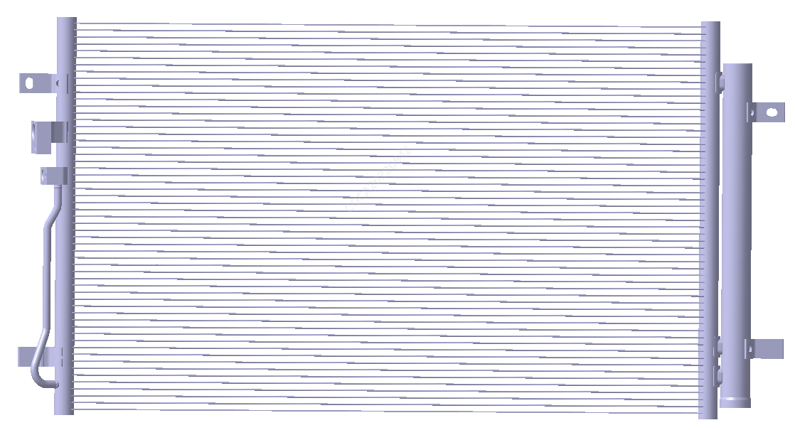

Пары хладагента высокого давления и высокой температуры, поступающие из компрессора кондиционера, направляются в конденсатор. Конденсатор изготовлен из алюминиевых трубок и охлаждающих ребер, обеспечивающих быстрый теплообмен для паров хладагента высокого давления и высокой температуры; охлаждающие ребра за счет рассеивания тепла конденсируют пары хладагента в жидкость высокого давления и средней температуры.
Ресивер-осушитель расположен с правой стороны конденсатора; внутренняя конструкция ресивера-осушителя спроектирована так, чтобы обеспечить поступление смешанного газожидкостного хладагента высокого давления и высокой температуры, при этом на выходе из ресивера-осушителя может быть только жидкий хладагент высокого давления и средней температуры. Внутри ресивера-осушителя находится осушитель для поглощения влаги из холодильной системы, осушитель повторному использованию не подлежит.